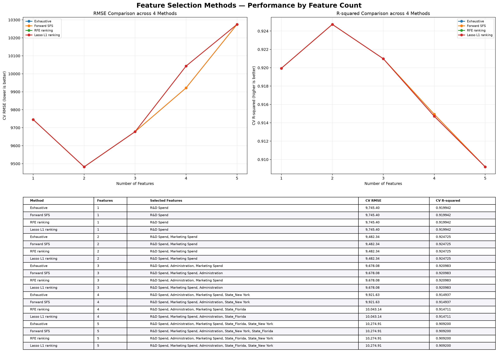

R&D Spend vs Profit 迴歸擬合畫布
支援滑鼠直接拖曳紅線擬合，觀察殘差即時變化
以五種 Scikit-learn 線性迴歸方法，探索 1~5 個特徵對新創公司利潤預測的影響。互動式選擇模型、比較 RMSE / R²，並即時計算預測利潤。
當前任務：以公司支出（R&D、行銷、行政）及州別預測最終獲利 Profit。
✓ 預設資料：Kaggle 50 Startups (亦支援一鍵載入 Avik-Jain 100-Days-Of-ML-Code 公開來源)
評估協議：80% Train - 20% Test, Random Seed: 0 | 5-Fold Nested Cross Validation
單一模型的 RMSE 與 R²，於 1~5 個特徵表現趨勢
| 模型演算法 | 特徵數 k | 最佳特徵組合 | 5-Fold CV RMSE | Test RMSE | Test R² |
|---|
在 80/20 資料分割下，跨 5 大特徵選擇演算法於 k=1~5 特徵維度的測試集 RMSE 與 R² 真實評估表現

點擊圖片可 300 DPI 全螢幕放大檢視
支援滑鼠直接拖曳紅線擬合，觀察殘差即時變化